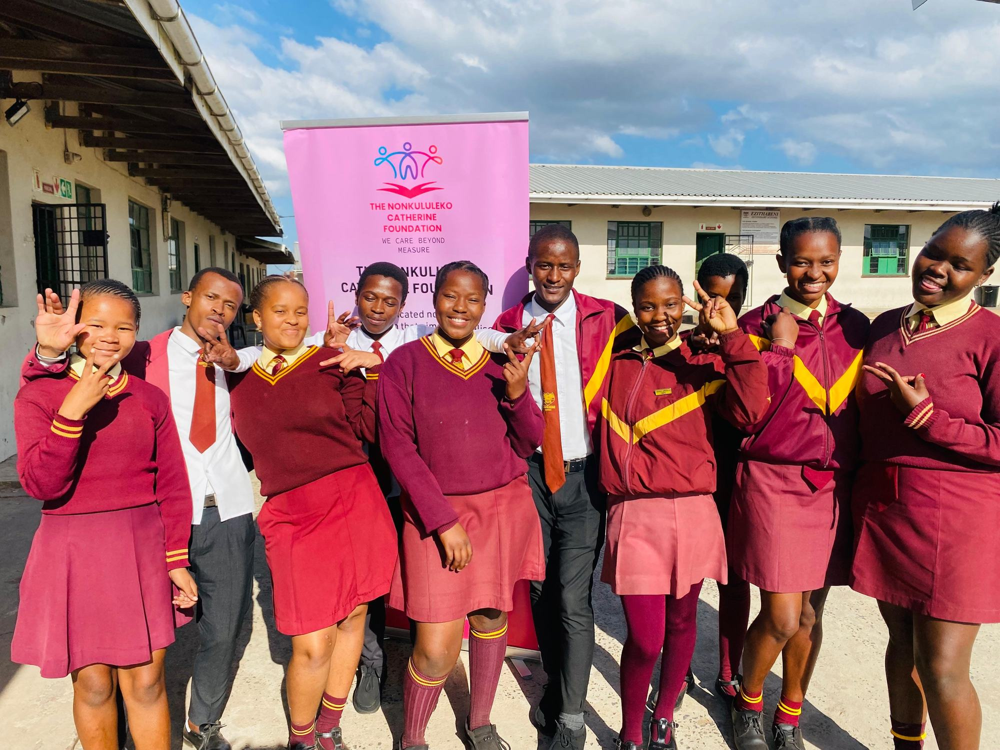
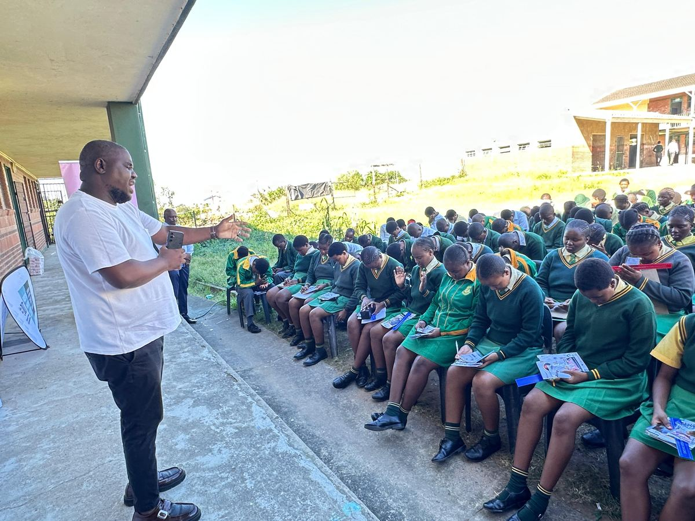
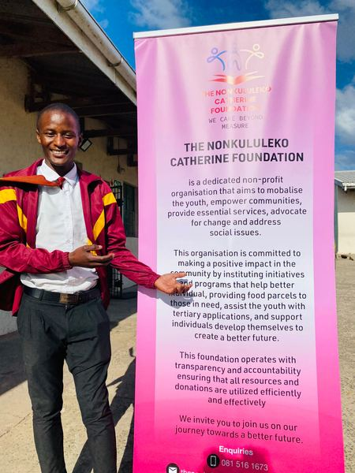
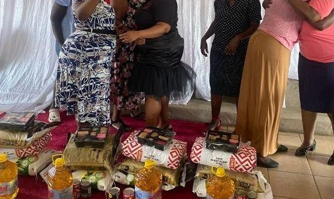
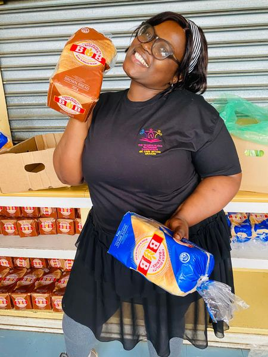
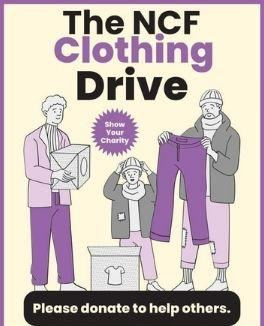
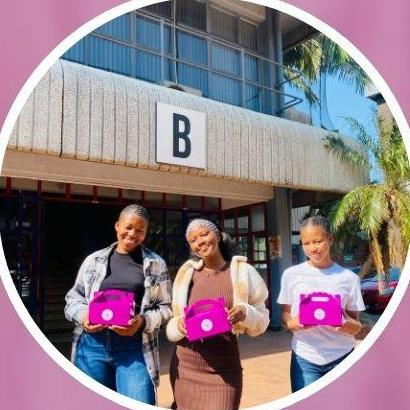
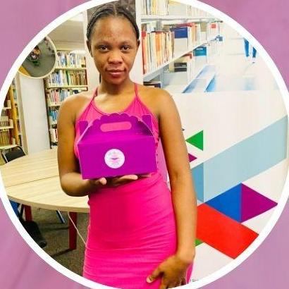
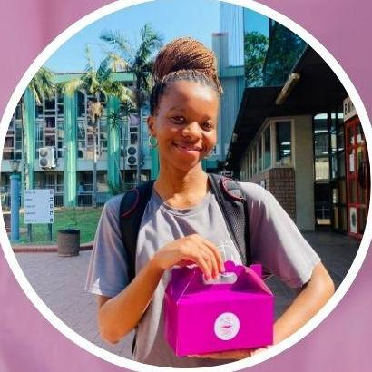

Four answers to real needs.
Each programme answers a need a community named, and each one is delivered in person by our team and volunteers.
School outreach & applications.
We visit high schools to run motivation sessions with learners, then sit with them and help with university and college applications, so no one misses a chance because the forms felt impossible.
- Motivation and mentorship sessions for teenagers
- Hands-on help with tertiary applications
- Stationery and study materials where we can


Food parcels.
Groceries and household staples for families going through a hard season, packed by volunteers and handed over in person, with dignity.
- Maize meal, cooking oil and other staples
- Household staples for the whole family


The NCF Clothing Drive.
What you can spare, others can wear. Clothing, shoes, bags and bedding collected from the community and passed on to teenagers and families who need them.
- Clothing and shoes
- School bags and backpacks
- Bedding

Comfort & Dignity Drive.
No student should miss a lecture because she can't afford the basics. Our comfort boxes carry sanitary and personal-care essentials straight to young women on university campuses.
- Sanitary products and personal-care basics
- Delivered in person on campus



Pick one. Make it happen.
Give items, sponsor a box, or bring a whole organisation behind a drive.